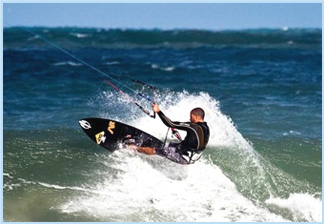
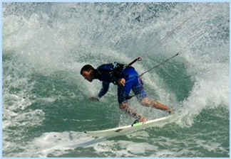
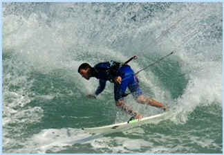

Pilates Esporte

Os benefícios do método para os atletas são diversos.
A prevenção de lesões está em primeiro lugar, mas também se pode considerar a correção de desequilíbrios musculares, o ganho de força muscular específica em determinados gestos da atividade, o aumento da capacidade respiratória e eficiência do diafragma e, consequentemente, a melhora do desempenho também são observados.  Nos últimos anos muitos esportistas, como exemplo: surfistas, corredores, nadadores, tenistas, jogadores de futebol, de vôlei, dançarinos, entre outros, estão entre os praticantes do método. Com a prática de Pilates aprendem a dosar a energia, distribuir forças e utilizar, de forma inteligente, a gravidade a seu favor, aproveitando a eficiência do seu sistema de fáscias, ganhando em rendimento, saúde e melhores resultados. Inclua o Pilates na sua rotina e perceba melhorias evidentes em seus resultados!
A prevenção de lesões está em primeiro lugar, mas também se pode considerar a correção de desequilíbrios musculares, o ganho de força muscular específica em determinados gestos da atividade, o aumento da capacidade respiratória e eficiência do diafragma e, consequentemente, a melhora do desempenho também são observados.  Nos últimos anos muitos esportistas, como exemplo: surfistas, corredores, nadadores, tenistas, jogadores de futebol, de vôlei, dançarinos, entre outros, estão entre os praticantes do método. Com a prática de Pilates aprendem a dosar a energia, distribuir forças e utilizar, de forma inteligente, a gravidade a seu favor, aproveitando a eficiência do seu sistema de fáscias, ganhando em rendimento, saúde e melhores resultados. Inclua o Pilates na sua rotina e perceba melhorias evidentes em seus resultados!